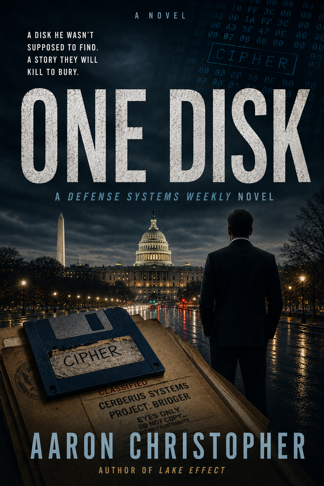

Daniel Murcer arrives in Washington on a Saturday with four hundred dollars, a trunk full of boxes, and a job at the Meridian Institute for Policy Research that starts Monday. He stops at a McDonald's outside Hazleton, Pennsylvania. He orders a Quarter Pounder and apple pie. He doesn't know that the girl behind the register—a nineteen-year-old from Hazleton named Marie Kowalski—has just hidden a floppy disk in his bag.
The disk belongs to her brother Tommy, sixteen, a programmer who built something he shouldn't have: a two-stage encryption payload capable of making the Defense Logistics Agency's entire data infrastructure inaccessible. He calls it CIPHER. A defense contractor called Cerberus Systems has taken Tommy to finish the work. They are running out of time.
Daniel has four days before the program deploys.
ONE DISK is a literary techno-thriller set in May 1987—a world of pay phones, floppy disks, government procurement, and a newsroom that still uses pencils. It is a story about what it costs to publish the truth before someone decides you shouldn't get the chance.
The Accord smelled like old coffee and carpet. Daniel Murcer had known the smell so long he had stopped noticing it three hours outside Syracuse. The back seat held two cardboard boxes, a duffel bag, and the disorder that accumulates at the end of four years: a lamp without a shade, a damp shower caddy, a framed photograph that had never found a wall and was making another trip in bubble wrap. The trunk held the serious things: good clothes in a garment bag, textbooks he had promised himself he would read again, and a portfolio of writing clips arranged by date.
He had left at six-fifteen. It was not quite ten now, and he was somewhere in Pennsylvania, the highway bending through hills made impossibly green by May.
The radio had been going in and out since the Delaware Water Gap. He'd found a Philadelphia station for a while and then lost it, and now he was on a signal out of somewhere that played Graceland twice in forty minutes, which he didn't mind. He had a copy of The Joshua Tree in the cassette deck but he'd been saving it. He wasn't sure what for.
The drive had the exact quality of what it was: a border crossing. Behind him was the person he had been, assembled over twenty-two years in pieces he had not chosen. Westchester. An unremarkable high school. Syracuse, which had felt like the whole world while he was inside it and was already flattening into memory. Ahead was whatever came next. He had avoided thinking about it too specifically. Specificity made things either real or frightening, and he did not have time for either.
The McDonald's was the same McDonald's it always was, which was the point of McDonald's.
He ordered without looking at the menu. Quarter Pounder. Medium fries. Coffee. The girl behind the register punched it in before he finished saying it. Her name tag said Marie. She had dark hair pulled back and the stillness of someone paying more attention than she appeared to be. He noticed this without meaning to: she was too sharp for the room.
"Anything else?"
He glanced up at the menu board. "Apple pie."
"Those take a few minutes. I'll bring it over."
He paid. She made change. The transaction had the clean efficiency of something that had happened a thousand times.
He took his tray to a window booth and ate facing the Sunoco across the lot, where a man in coveralls worked under the hood of a pickup with the patience of someone who had been there a while and expected to be there longer. The Quarter Pounder was fine. The coffee was better than it had any right to be.
Daniel ate the apple pie as he drove.
He needed a napkin around mile marker 149.
There was a rest stop two miles south. He'd seen the sign. He had the option of waiting, but the pie had gotten onto his thumb and he reached across without thinking and picked up the McDonald's bag from the passenger seat.
The disk was at the bottom.
The first documented ransomware attack is usually dated to 1989: the AIDS Trojan, distributed by Joseph Popp on floppy disks mailed to researchers at the World Health Organization. The program encrypted filenames and demanded payment to restore access. It was crude. It was effective. It changed everything that came after.
But software doesn't require publication to exist. A sixteen-year-old in Hazleton, Pennsylvania, working alone on an IBM AT with access to technical documentation and enough time, could have built something like CIPHER two years earlier. The architecture was there. The vulnerability was there. What was missing was someone who understood what it was worth.
ONE DISK is a work of fiction. But it takes seriously a question that the history of cybercrime doesn't answer: what happens when a weapon is invented before the world has a name for it—and the only person who truly grasps its power is the one who wants to use it?
“The boy had never trusted perfect execution. He had trusted verification.”
Built CIPHER in his bedroom in Hazleton, Pennsylvania. Two-stage payload. Keyfile hidden outside the FAT directory structure. A timer, not a trigger. He built in a safeguard because he didn't trust perfect execution. He trusted verification. He was right about that.
CEO, Cerberus Systems. Tysons Corner, Virginia. He collected locks. He understood, better than anyone in the room, what the boy had actually built. Not a program. Not a vulnerability. A key that worked on every door at once. He called it an asset.
Chicago, 1926. A mechanic with a talent for making cars do things their manufacturers never intended. A job that was supposed to be temporary. A woman who turns out to be his oldest friend's sister. A Prohibition-era crime novel that begins in the steamy heat of a Chicago summer and ends in the lake-effect snow of upstate New York.
LEARN MOREFor updates on publication, ARC availability, and new work from Aaron Christopher.